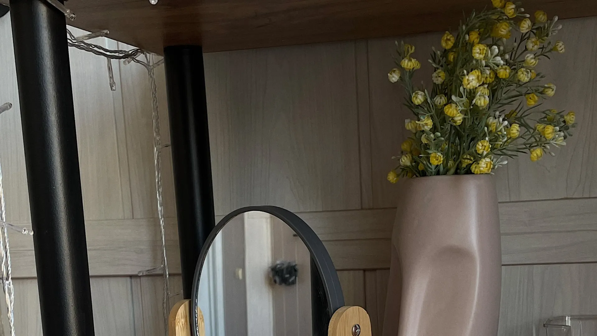
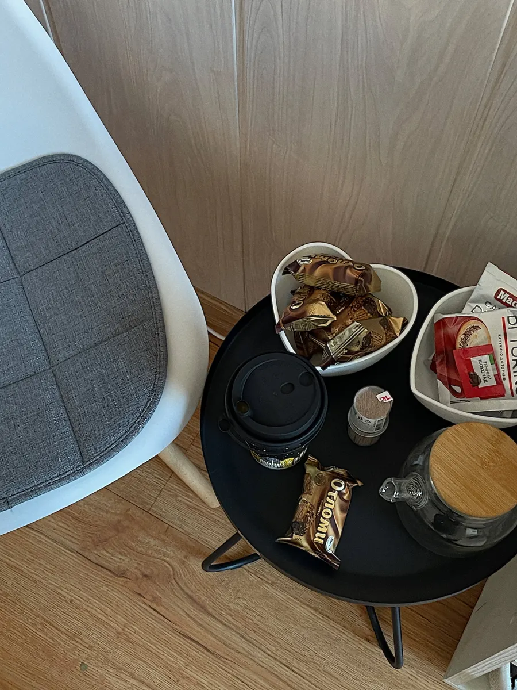
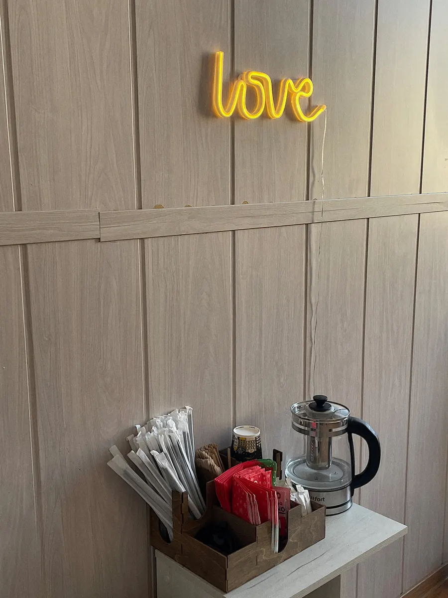
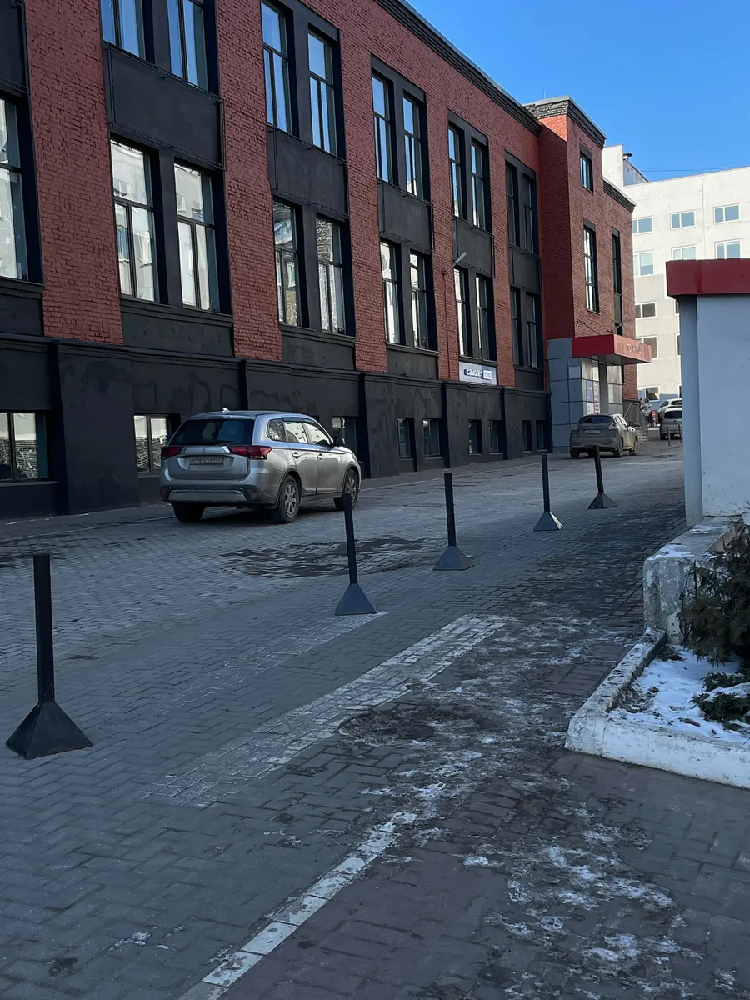

Ламинирование ресниц · Владимир
Ламинирование ресниц во Владимире за 40 минут
На любых ресницах – яркий завиток без туши, который держится до полутора месяцев. Дворянская, 27А, корпус 2.
- 5,0 на Яндекс.Картах – 51 отзыв
- Процедура – 40 минут
- Чай или кофе после процедуры

Цены
Цены с карточки студии на Яндекс.Картах.
Ламинирование ресниц
- Ламинирование ресниц40 минут, на любых ресницах2 400 ₽
- Снятие наращенных ресниц + ламинирование3 000 ₽
Оплата наличными, переводом или по СБП.
Как записаться
- 01
Выбираете услугу, день и время
Прямо на сайте, в форме записи наверху страницы.
- 02
Сообщение уходит мастеру в WhatsApp
Текст уже набран – остаётся нажать «отправить».
- 03
Мастер подтверждает окно
Если время занято, предложит ближайшее свободное.
- 04
Приходите на процедуру
Адрес и как пройти – внизу страницы.



За что выбирают Веронику – по отзывам
Яркий завиток на любых ресницах
Даже на прямых и коротких – тушь больше не нужна.
Держится до полутора месяцев
Постоянные клиентки пишут: 1,5 месяца, а то и два.
Можно поспать
Удобная кушетка, музыка и аромат – многие засыпают на процедуре.
Расскажу про уход
Подробно – что можно и что нельзя после ламинирования.
Отзывы с Яндекс.Карт
«Посещаю не первый раз процедуру ламинирования ресниц. Мне очень нравится результат,реснички длинные и подкрученые на протяжении 1.5 месяцев. В кабинете приятная обстановка,аромат,музыка. Даже засыпаю на процедуре) однозначно, советую мастера!!!»
Марина БЕЗРУКОВА · 16 декабря 2025
«Можно сказать я постоянный клиент Вероники, обожаю ее работу, ее нежные ручки и классное обслуживание, всегда приятно приходить туда где тебя ждут, дадут отдохнуть, перезагрузить я и еще сделают бомбезные реснички ❤️ от души советую!»
Алина Переди’стая💎 · 6 июля
«Очень довольна результатом ламинирования ресниц! Мастер очень внимательная,аккуратная, время процедуры 40-50 мин. Красивый, большой, уютный кабинет с приятной музыкой и очень удобной кушеткой, после процедуры мастер предлагает чай/кофе.»
712417 Горюнова · 11 декабря 2025
Отзывы с карточки на Яндекс.Картах, без правок.
Частые вопросы
Сколько длится процедура?
Около 40–50 минут.
Как найти студию?
Дворянская, 27А, корп. 2: заходите в помещение и поднимайтесь на 2 этаж. Ориентир – кофейня справа от крыльца.
Можно, если сейчас наращенные ресницы?
Да: снятие наращенных ресниц + ламинирование – 3000 ₽.
Напишите, когда удобно
- Адрес
- Дворянская улица, 27А, корп. 2, 2 этаж, Владимир
- Часы
- пн–пт 10:30–21:00, сб 10:30–16:30, вс выходной
- Телефон
- +7 (960) 730-02-38